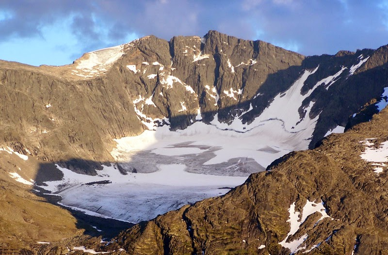

En esta imagen podemos ver las partes del glaciar de valle Def.: Un circo glaciar es una zona de topografia
concava donde se acumula la nieve que cae, tanto desde las nubes como desde las laderas que lo rodean (avalanchas).
Es el area de cabecera desde donde parte la lengua glaciar hacia el valle.
Def.: Una lengua glaciar es una gran masa de hielo que
desciende por la ladera de la montaña movida por acción de la gravedad. La velocidad es mayor en la zona central y superior
de la lengua glaciar, siendo mas lenta en los laterales y en el fondo, debido al rozamiento que sufre contra el
terreno.
Circo glaciar

Lengua glaciar